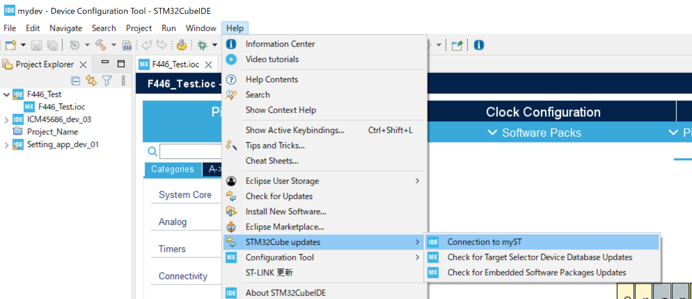
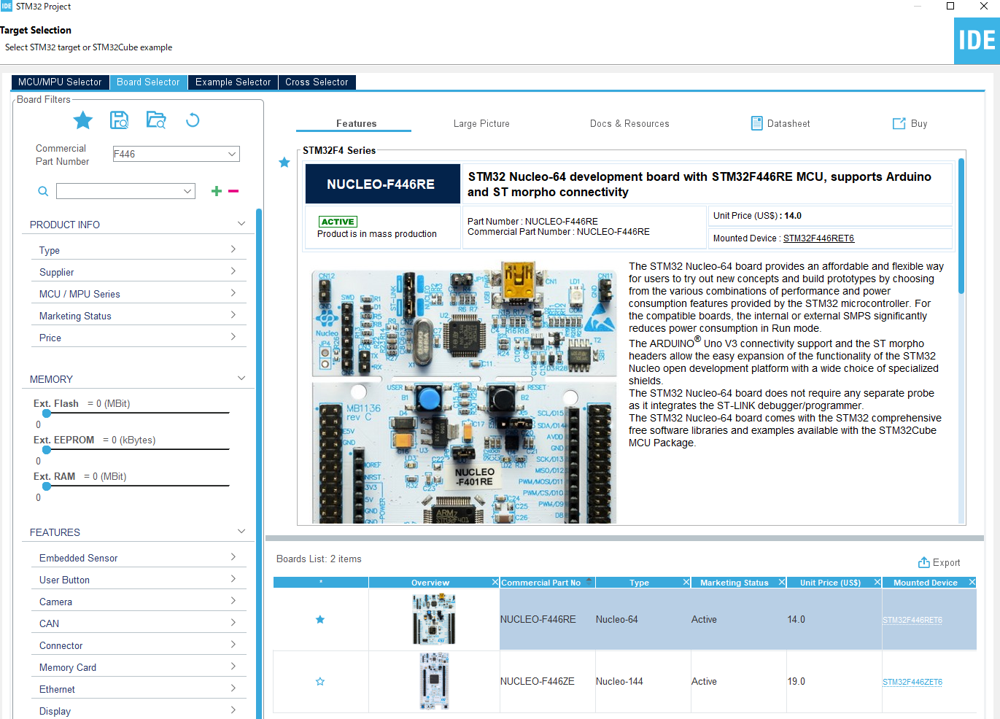
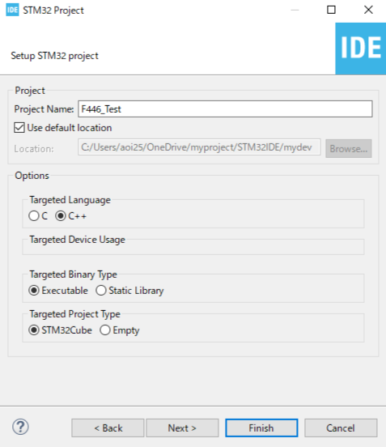

STM32資料 導入 2
STM32の初期設定を済ませよう
今回やること
今回は、STM32CubeIDEの初期設定をやります
- STM32CubeIDEのバージョンによっては、設定の位置が違うので困ったら先輩に聞いてね
ワークスペースの作成
プロジェクトを保存するフォルダになるものです
アルファベットと数字で好きな名前をつけてね（初期のままでも大丈夫）
ログイン
バージョン1.17.0以降の場合
上のメニューのHelp > STM32Cube updates > connectionMySTを選択しログインしよう
バージョン1.16.1以前の場合
上のメニューのMySTを選択しログインしよう
プロジェクトの作成
手順が多そうに見えるけど、意外とすぐに終わるので頑張ってね
- Start new STM32 Projectのボタンか右上のFlie > New > STM32 Projectを押そう
- 出てきた画面の左側上の"Board"を選択し、検索ボックスに"F446"と入力しよう
- NUCLEO-F446REを選択し、右下のnextのボタンを押そう
- Project Nameにプロジェクト名を入力して、Targeted LanguageをC++にしよう
- Finishを押してプロジェクトを作成!
ボードの選択（お気に入りをしておくといいかも）
プロジェクトの設定（名前は好きに決めて大丈夫）
プロジェクトの設定
必要なコードを自動生成してくれる機能の設定です
- (Project名).iocを選択し、Project Managerを開こう
- Code Generatorを選択し、Generate Pripheral・・・のチェックを入れよう
- Ctrl + Sを押して保存しよう
ファイルの設定
ここでは2つのファイルの追加と1つのファイルの加筆を行います
作業量は多くても基本はコピペなので大丈夫です！
- Core > Inc に"wrapper.hpp"というファイルを作成し、下のコードをコピペしよう
- Core > Srcに"wrapper.cpp"を作成し、下のコードをコピペしよう
- Core > Srcに"main.c"の中身を書き足そう
wrapper.hppの中身
#ifndef INC_WRAPPER_HPP_
#define INC_WRAPPER_HPP_
#ifdef __cplusplus
extern "C" {
#endif
void init(void);
void loop(void);
#ifdef __cplusplus
};
#endif
#endif /* INC_WRAPPER_HPP_ */wrapper.cppの中身
#include "wrapper.hpp"
void init(){
//起動時に1度だけ実行される
}
void loop(){
//一度の実行が終了後、無限に繰り返される
}main.c書き換えの中身
・25行目付近(#include "wrapper.hpp"の追加)/* USER CODE BEGIN Includes */
#include "wrapper.hpp"
/* USER CODE END Includes */
/* USER CODE BEGIN 2 */
init();
/* USER CODE END 2 */
/* Infinite loop */
/* USER CODE BEGIN WHILE */
while (1)
{
/* USER CODE END WHILE */
/* USER CODE BEGIN 3 */
loop();
}
/* USER CODE END 3 */
終わりに
今回の説明したプロジェクト作成の作業は、毎回やることになるので忘れちゃったら見返してね